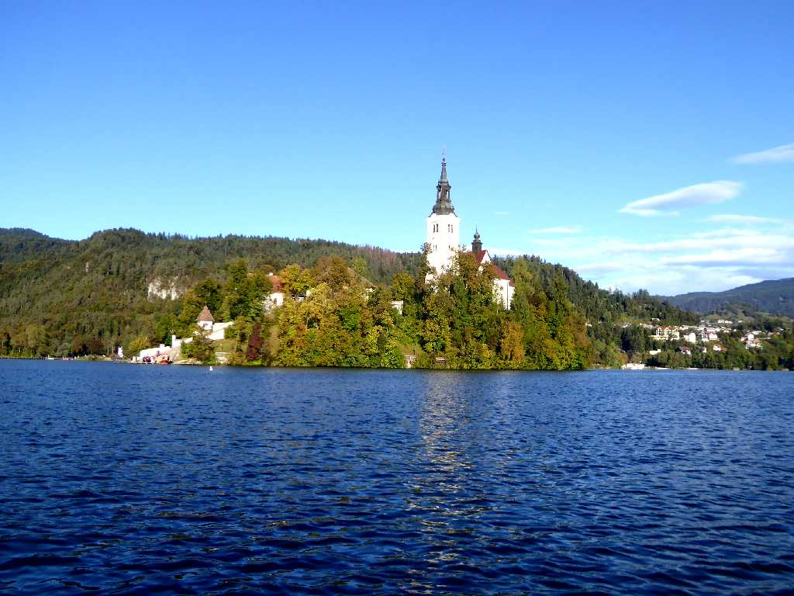
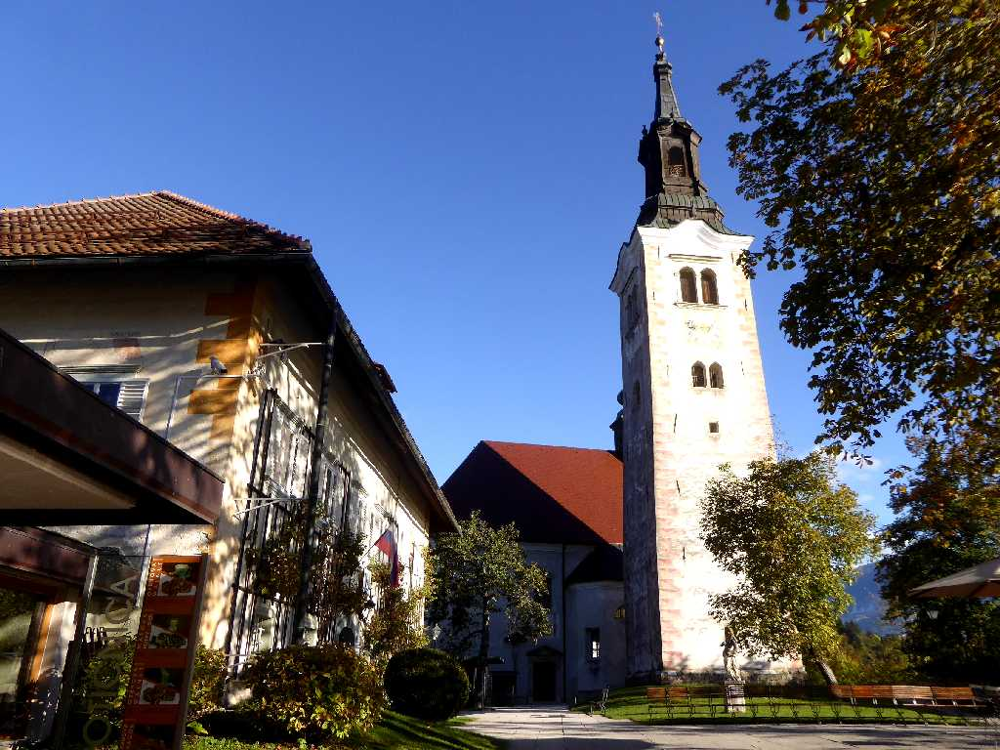
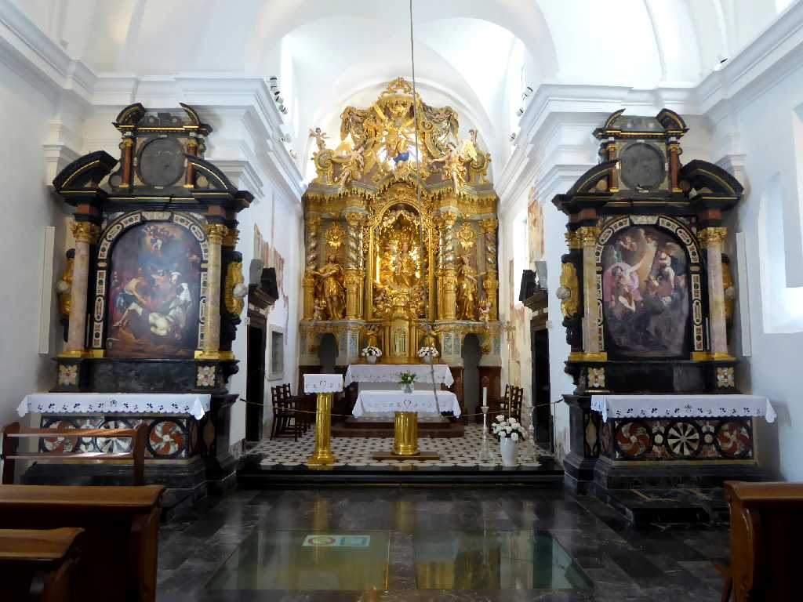
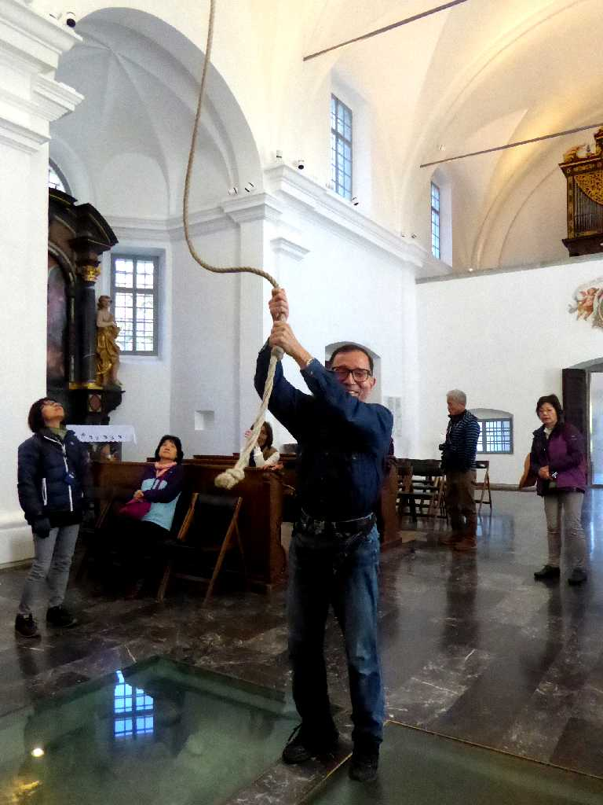

Bled Island Lake Bled Bled
ブレッド湖に浮かぶプレッド島

Cerkev Marijinega vnebovzetja (Church of the Assumption of Mary) Bled Island
１５世紀に創られた聖母被昇天教会

Cerkev Marijinega vnebovzetja

October 6 2016 Church of the Assumption of Mary
塔にある鐘を鳴らす